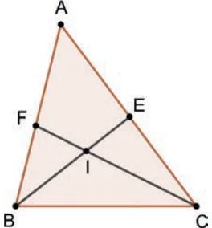
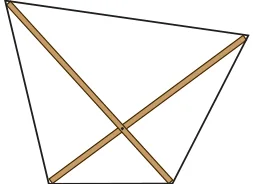

Frame the converse for each of the propositions in Questions 1–12. Then, determine if each of the two statements is true or not. Justify the true statements and give a counterexample for each false statement.
- If two lines are parallel, then the corresponding angles formed by a transversal are equal.
- If a quadrilateral is a square, then all its angles are equal.
- (*) Given any \(\triangle ABC\), let us bisect the angles at B and C. The bisectors meet at the incentre I of the triangle.
Now extend the bisectors beyond I till they meet the opposite sides at E and F respectively, as shown.
Proposition: If \(AB = AC\), then \(IE = IF\).

Fig. 9.1 - If \(x = y\), then \(a + x = a + y\), where \(x\), \(y\) and \(a\) are any three numbers.
This proposition and its converse are routinely used while solving equations.
- If \(a\) and \(b\) are perfect squares, then \(ab\) is a perfect square.
In Questions 6 and 7, \(x\) and \(y\) are real numbers.
- If \(x = y\), then \(x^{2} = y^{2}\).
- If \(x = y\), then \(x^{3} = y^{3}\).
In Questions 8–12, \(n\) is a positive integer.
- If \(n\) is divisible by 24, then it is divisible by both 4 and 6.
- If \(n\) is divisible by 60, then it is divisible by both 5 and 12.
- If \(n\) is the square of a prime number, then it has exactly 3 factors.
- If \(n\) is a product of two unequal prime numbers, then it has exactly 4 divisors.
- If \(n\) and \(n + 3\) have no factors in common, then \(n\) is not a multiple of 3.
- There are no known ‘neat’ expressions that generate only primes! Find counterexamples to the following claims.
- All numbers of the form \(4n^{2} + 1\) are prime.
- All numbers of the form \(n^{2} + n + 11\) are prime.
- All numbers of the form \(4^{n} + 3\) are prime.
- Find counterexamples to the following statements.
- If \(n\) is a prime number, then \(2^{n} - 1\) is a prime number.
- If \(n\) is an even number, then \(2^{n} + 1\) is a prime number.
- Consider the statement: ‘If a number is divisible by 8, then it is divisible by both 2 and 4’.
- Justify the statement.
- Recall the divisibility shortcuts that we have studied for different numbers. To check whether a given number is divisible by 8, is it enough to check whether it is divisible by 2 and 4? Why or why not?
- Recall that a shortcut to check whether a given number is divisible by 3 is to add the digits of the number and check if the sum is a multiple of 3. Express the relationship between ‘a number is divisible by 3’ and ‘sum of the digits is a multiple of 3’ using ‘If-then’ sentences.
- We have identified different types of quadrilaterals — squares, rectangles, parallelograms, rhombi, kites and trapezia. One can identify more types (e.g., we could create a category of quadrilaterals that have equal-length opposite sides).
Suppose we have identified a category of quadrilaterals called Q, and we have to construct a quadrilateral of this type. For this, we are to use two thin sticks, put them together as diagonals so that the quadrilateral obtained by joining their endpoints is of type Q (see the Fig. 9.2).

Fig. 9.2 - Suppose Q satisfies the following property.
If a quadrilateral is of type Q, then it has equal-length diagonals.
- Should the two sticks be of equal length? Why or why not?
- Will it matter how the two sticks are put together?
- Instead of the property mentioned above, suppose Q satisfies the following property.
If a quadrilateral has equal diagonals, then it is of type Q.
What will be your answers to (a) and (b) now?
- Suppose Q satisfies the following property.